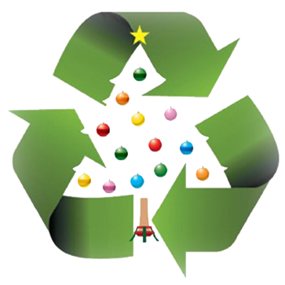
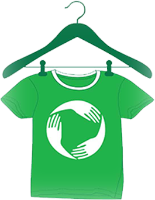
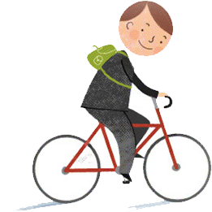
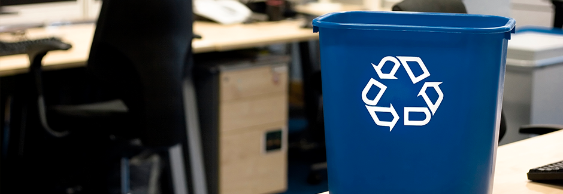

It's that time of year again. There are spiced lattes abound in the coffee shops, and twinkling lights adorn George Square. Christmas is a wonderful time that always seems to be over so quickly! Soon enough, it is time to dismantle the Christmas tree masterpiece from our living rooms, and figure out what to do with its browning, bare boughs.
You can add a touch of eco-consciousness to this festive period by disposing of your Christmas tree the green way.
Glasgow City Council advises real Christmas trees can be placed in your brown bins for kerbside collection. To ensure collection, please cut the tree into pieces and check that the lid will close.
Alternatively, trees can be taken to any of the following household council recycling centres:[2]
In the UK, 5 million tonnes of paper is sent to landfills every year.[3] With increasing trends in foil and glittered papers, it is unlikely that the material is %100 paper. Many papers contain small amounts of plastic and metals that cannot be recycled.
To ensure that your wrapping paper is recyclable, you can do the "Scrunch Test". This involves scrunching your paper into a ball. If it remains scrunched, then it's likely you can recycle your paper. If it un-scrunches, it cannot.
Even if your paper is recyclable, you will still need to remove all sellotape and gift tags that cannot be recycled!
We can do our part to tackle the plastic crisis that is affecting our planet by using less plastic. An excellent start to this is by taking part in #PlasticFreeFriday.
Plastic pollution sticks around for ages with horrible effects on wildlife and the environment. Every minute a truckload of our plastic enters our oceans. Sea creatures can get tangled up in it or mistake it for food.
But we can all do our bit to help! Going plastic-free on Fridays is a small step you can take to make a real difference to the amount of single-use plastic that ends up in the ocean. Whether it’s buying shampoo bars or drinking from a reusable water bottle, there are loads of easy ways to start cutting out plastic.
Click here and take the pledge to join thousands of others going plastic-free on Fridays and get tips to help you go plastic free.
Many household items can be repurposed and reused to suit the needs of the green-thumbed.
By doing a few of these simple things, you can minimise tge amount of plastics you send to landfills!
Textiles and shoes account for more than 12% of all waste in landfill sites. If everyone in the UK bought just one reclaimed woollen jumper each year we would save roughly 400 million gallons of water. This is more than the volume of the average UK reservoir.
Recycling and reusing clothing can benefit the environment in so many ways. Check out our Ethical Shopping page to find out more about shopping for the environment. Furthermore, below is a list of textile recycling companies who send your unwanted clothing to those in need.
Clyde Recycling Ltd is a professional clothing and textiles recycling company with over 30 years industry leading experience. From their facility in Glasgow, they recycle high quality second hand clothing and export to all over the world. Last year Clyde Recycling shipped over 3000 tonnes of clothing across Africa, Europe and South America.
Cash4Clothes is a company that purchases your unwanted clothes and sends them on to be reused! You can organise a collection, or bring your clothes in to a local branch, and you can walk away with cash! All of your clothes get exported worldwide where it will get a new lease of life and worn again.
As a business, you are probably producing the following wastes, which can be recycled:[6]
WRAP has developed www.recycleatwork.org.uk, a tool allows you to identify recycling waste contractors in your area.
You could also consider cycling to work to reduce your Carbon Footprint - it can count as part of your weekly excercise also!
